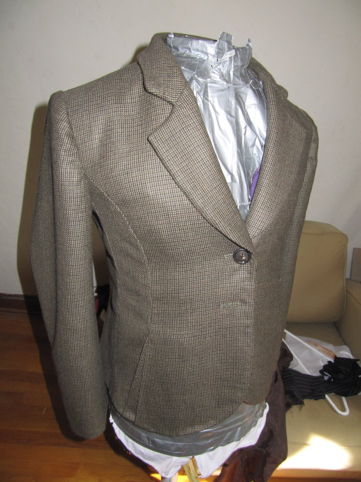
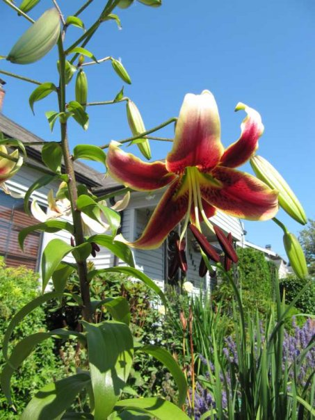
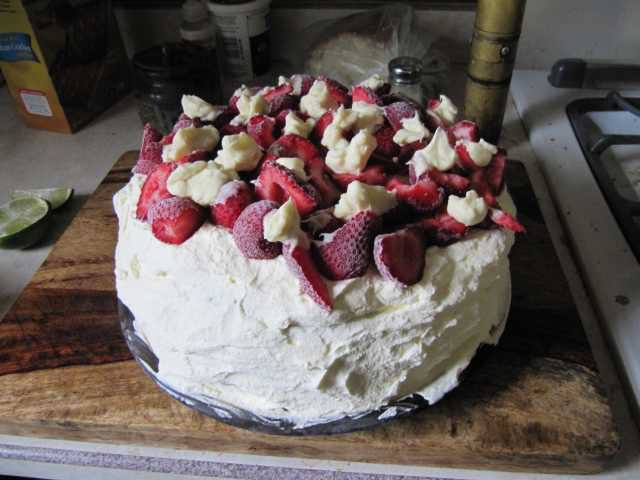

Charles Peden
a website for the shewing of divers skills and virtues
A contrarian product of semi-rural southern Oregon, Charles likes to consider himself a dispassionate craftsman interested in the quality of both process and product.
With an eclectic educational history including studies of Literature, Chinese Language and History, Garment Patternmaking and, soon, Web Development, he has hitherto pursued an equally eclectic career in that most rewarding of professional fields, the arts.
What follows is a list of links to the exciting programming projects Charles has thus far produced. Hold on to you hats, otherwise your mind may be sprayed across the ceiling...
a hacking coat created for a client:
a beautiful lily he grew:
a cake he made:
